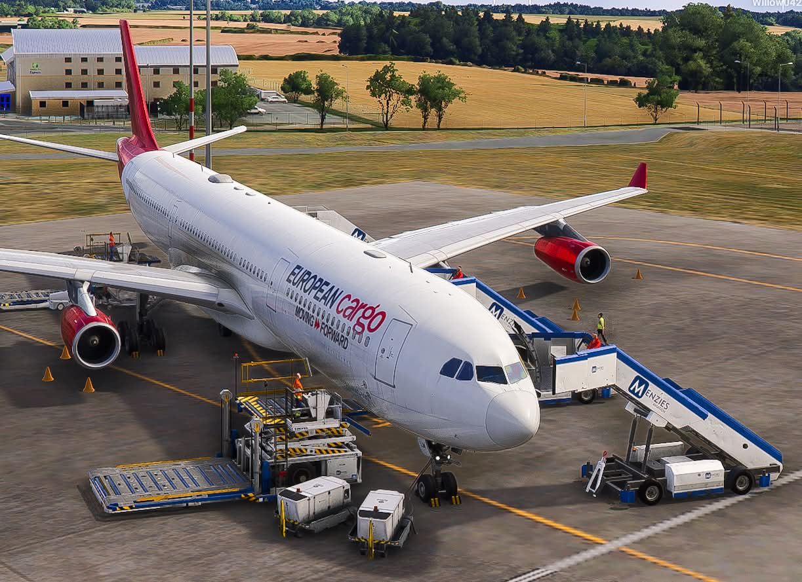
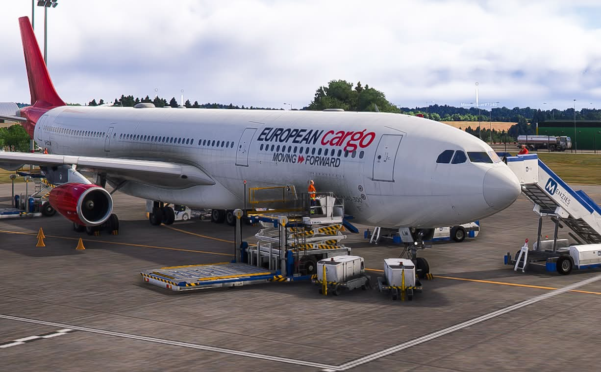
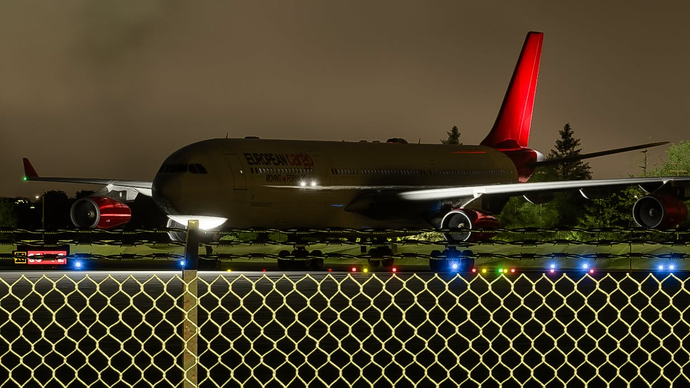
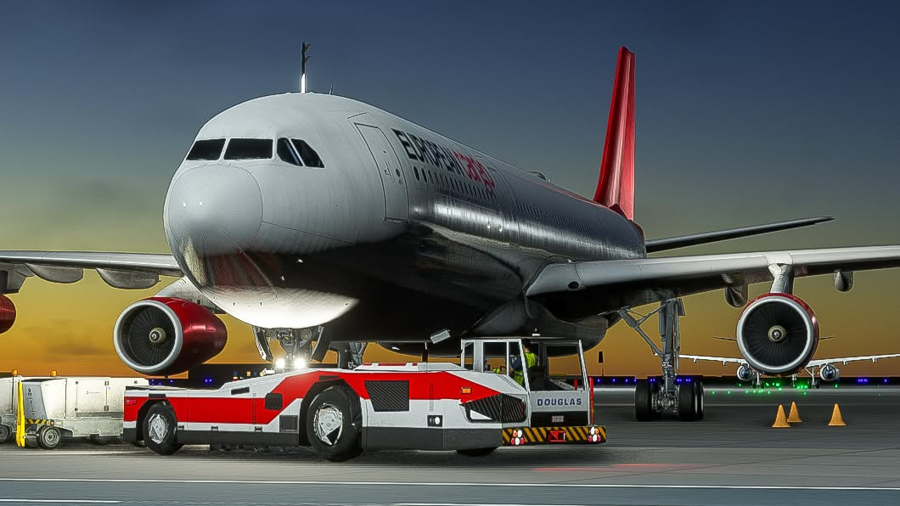

Fleet / Airbus A340 & A321
AN UNMISTAKABLE PROFILE.
Airbus A340 long-haul operations, now joined by the Fenix A321.
Featured aircraft
AIRBUS
A340.
An Airbus cargo fleet for scheduled, charter and seasonal operations.
Our primary cargo aircraft are the Airbus A340-600F and A340-500F. Aerosoft and iniBuilds A340 add-ons are also accepted for ECV flying in Microsoft Flight Simulator 2024. All A340 variants may operate the 28 original scheduled sectors. Three A321Fs operate our new European return routes: Cardiff–Frankfurt, Bournemouth–Liège, Birmingham–Billund and Teesside–Cologne.
- Families
- Airbus A340 & A321
- Role
- Virtual cargo operations
- Simulator
- Microsoft Flight Simulator 2024
- A340 roster
- 9 A340s · 3 A321Fs
New fleet aircraft / Airbus A321
A NEW CHAPTER.
THE AIRBUS A321.
The Fenix A321 joins ECV’s fleet alongside the Airbus A340 family.
The supplied European Cargo livery is labelled fictional, for the Fenix A321 IAE (P2F), in 8K. Check the listing’s simulator compatibility and installation instructions before downloading.
Get the Fenix A321 livery- Aircraft
- Airbus A321
- Required add-on
- Fenix A321 IAE
- Livery
- European Cargo · fictional P2F
- Registrations
- G-ECLF · G-ECVF · G-ECVA
The livery download is separate from the aircraft add-on. A321F operations: Cardiff–Frankfurt, Bournemouth–Liège, Birmingham–Billund and Teesside–Cologne, in both directions. Follow current ECV guidance for aircraft-specific procedures.
A321F / European cargo operations
THREE AIRCRAFT.
FOUR RETURN CONNECTIONS.
| Registration | Aircraft |
|---|---|
| G-ECLF | A321F |
| G-ECVF | A321F |
| G-ECVA | A321F |
Cardiff ↔ Frankfurt · Bournemouth ↔ Liège · Birmingham ↔ Billund · Teesside ↔ Cologne
Choose your aircraft
THE A340 FAMILY.
Airbus A340-600F
One of ECV’s primary cargo types for scheduled, charter and seasonal operations. All 28 active scheduled sectors are available to this variant.
MSFS 2024 / A340 CARGO OPERATIONSNine registered A340 aircraft
THE A340 REGISTRATION ROSTER.
| Registration | Aircraft variant |
|---|---|
| G-ECLB | A340-600 |
| G-ECLC | A340-600 |
| G-ECLD | A340-600 |
| G-ECLE | A340-600 |
| G-ECLH | A340-600 |
| G-ECLJ | A340-600 |
| G-ECLK | A340-600 |
| G-ECLM | A340-600F |
| G-ECLN | A340-600F |
7 × A340-600 · 2 × A340-600F. The roster lists the registered variants supplied by ECV. All A340 variants are permitted on the 28 original scheduled sectors. The A321F roster is listed separately above.
On the ramp
THE A340. UP CLOSE.
Our supplied aircraft photography features the A340 fleet. A321F photography will be added when available.




GET TO KNOW YOUR AIRCRAFT.
Use an approved A340 add-on in Microsoft Flight Simulator 2024; Aerosoft and iniBuilds A340 add-ons are accepted. Follow the documentation supplied with your aircraft for performance, limitations and procedures. Find European Cargo liveries on flightsim.to and check each listing for compatibility. Read the ECV Operations & Information Guide before flying.
Explore operationsRecruitment open
THE NEXT FLIGHT.
YOUR FLIGHT.
Recruitment is open. Join the ECV Discord to apply and begin your next cargo chapter.
Join European Cargo